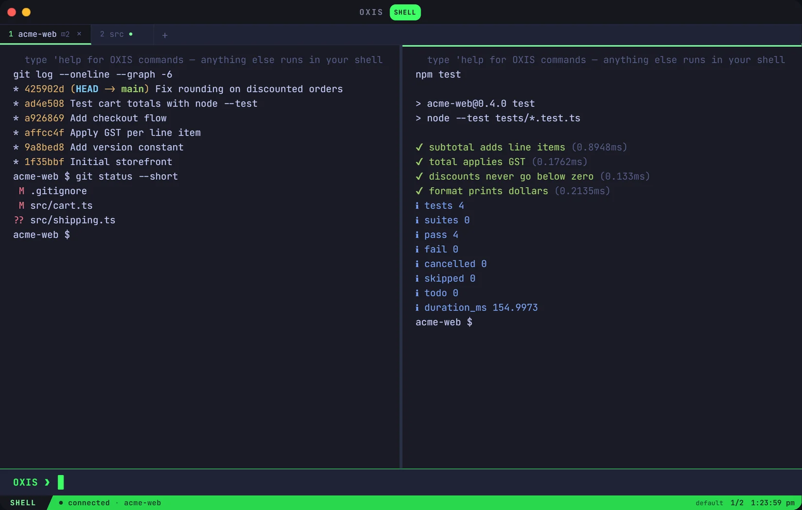

Your project runs itself.
A workspace is linked to the project's real folder and its own git repository, so two projects never share a remote. Tasks run in that folder, watchers react to saves, and monitors keep an eye on what's running.
'task testruns the project's tests;'autotestruns them on every save'healthcheck https://… every 30watches a service and says when it changes'mon,'topand'watch-memshow the machine live — Ctrl+C stops them- Tab completes files, git branches,
npm runscripts, SSH hosts and make targets in PowerShell, bash or cmd, and history suggests the rest as you type - Click
src/app.ts:12:5in a compiler error to open the editor right there - PowerShell, Git Bash, WSL or cmd, tab by tab:
'shell gitbash - Fold, re-run or copy any command's output; rename, duplicate and drag tabs
- Ctrl+Shift+Space puts a letter on every URL, path and hash on screen — type it to copy, no mouse
'broadcasttypes into every pane at once;'recordsaves a tab as an asciinema cast;'imgcatshows an image right in the output- A Settings window (Ctrl+,), and sound effects you can swap for your own
- Speaks modern terminal: hyperlinks, clipboard and progress from the tools that send them (OSC 8, 52, 9;4)
- Win+` brings OXIS to the front from any program; Open in OXIS on any folder in Explorer
- Right-click the file tree to create, rename, duplicate or delete
